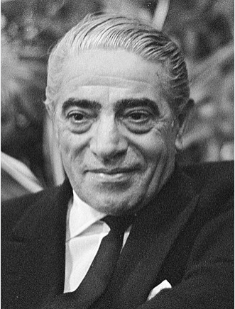

Aristotle Socrates Onassis (/oʊˈnæsɪs, -ˈnɑː-/;[1] Greek: Αριστοτέλης Ωνάσης, Aristotelis Onasis; 20 January 1906 – 15 March 1975),[2] commonly called Ari or Aristo Onassis, was a Greek[3][4] shipping magnate who amassed the world's largest privately owned shipping fleet and was one of the world's richest and most famous men.[5]

The most well-known potrait of Onassis
The following list is a time line of Onassis Life:
1906 - Born in Kanratas, Smyrna,Ottoman Empire.
1922 - He left from Smyrna during the great fire of Smyrna in 1922
1932 - He went to Buenos Aires, Argentina and start his shipping businesses
1946 - Onassis married Athina Livanos,daughter of shipping magnate Stavros G Livanos and Arietta Zafrikakis,on 28 December 1946. The couple had become largely separated by the mid-1950s.
1950~1956 - Onassis had success whaling off the Peruvain coast.
1953 - In Monaco he started to purchase the shares of monaco's SMB using the tax haven of Panama and finally take the control of SBM
1954 - Cancelation of the agreement between the Saudi government and Aristotle Onassis to transport Saudi oil on his tankers and "in any case, to make the agreement ineffective".